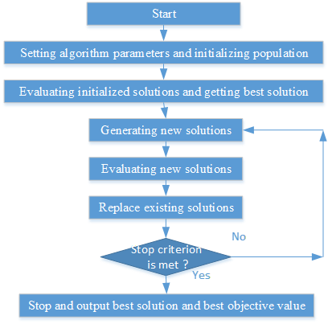
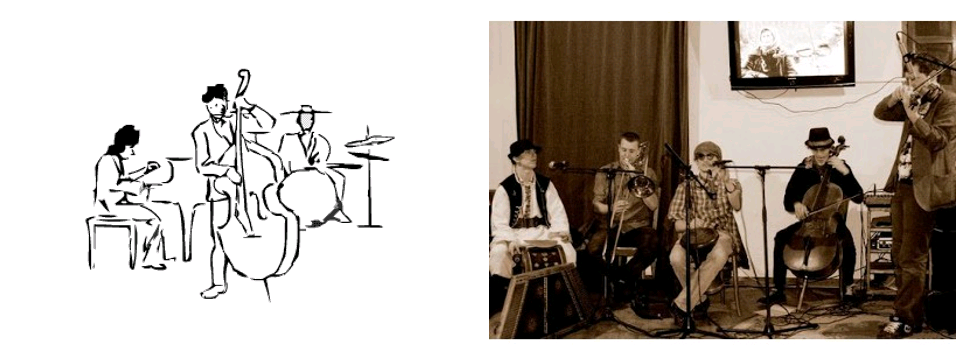
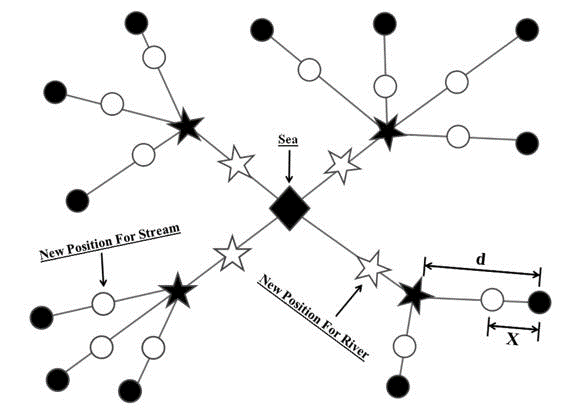

Computational Intelligence
Summary
 |
|
Contributions
Frame Work of Methaheuristics
|  |
Artificial Bee Colony Algorithm
Proposed by Karaboga in 2005
ABC is developed based on inspecting the behaviors of real bees on finding nectar and sharing the information of food sources to the bees in the hive.
Solving multidimensional and multimodal optimisation problems.
Harmony Search Algorithm
|  |
The HS can be conceptualized from a musical performance process involving searching for a best harmony.
Musical performances seek a fantastic harmony determined by aesthetic estimation, as the optimization techniques seek a best state (global optimum) determined by objective function value.
Aesthetic estimation is performed by the set of the sounds played by musical ensemble, as objective function value is evaluated by the set of the values produced by adjusted variables.
The better aesthetic sounds can be improved by constant practice, as the minimization/maximization of the objective function can mostly be improved by repeating iteration.
Water Cycle Algorithm
|  |
Water Cycle Algorithm (WCA) as an optimization method is introduced by Eskandar et al. (2012). The fundamental concepts and ideas which underlie the WCA is inspired by nature and based on the observation of water cycle process and how rivers and streams flow to the sea in the real world.
A comparative study has been carried out to show the effectiveness of the WCA over other well-known optimizers in terms of computational effort (measures as number of function evaluations) and function value (accuracy) for truss structures, unconstrained, constrained engineering design problems, and multi-objective (unconstrained, constrained) optimization problems.
Jaya Algorithm
The definition of Jaya is victory in Sanskrit
In the Jaya algorithm, the applied strategy always tries to become victorious by reaching the best solution and hence it is named Jaya, and it is reported as a simple and applicable optimization approach in the literature.
Reference
K. Gao, Y. Zhang, A. Sadollah, R. Su, A. Lentzakis. Jaya, Harmony Search and water cycle algorithms for solving large-scale real-life urban traffic light scheduling problem. Swarm and Evolutionary Computation, May 2017.
K. Gao, Y. Zhang, A. Sadollah and R. Su, “Optimizing urban traffic light scheduling problem using harmony search with ensemble of local search.” Applied Soft Computing 48 (2016): 359-372.
K. Gao, Y. Zhang, A. Sadollah, R. Su. Improved artificial bee colony algorithm for solving urban traffic light scheduling problem. IEEE Congress on Evolutionary Computation 2017, Donostia/San Sebastian. Jun 2017.
K. Gao, Y. Zhang, A. Sadollah and R. Su. “Java Algorithm for Solving Urban Traffic Signal Control Problem.” ICARCV2016, 2016.
K. Gao, A. Sadollah, Y. Zhang and R. Su. “Discrete Jaya Algorithm for Flexible Job Shop Scheduling Problem with New Job Insertion.” ICARCV2016, 2016.
K. Gao, Y. Zhang, R. Su and A. Lentzakis. “Discrete Harmony Search Algorithm for Solving Urban Traffic Light Scheduling Problem.” 2016 American Control Conference (ACC’16),2016.